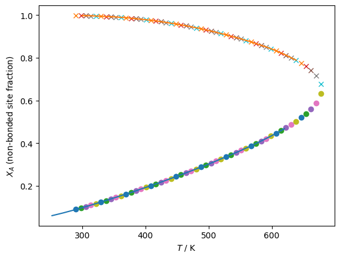
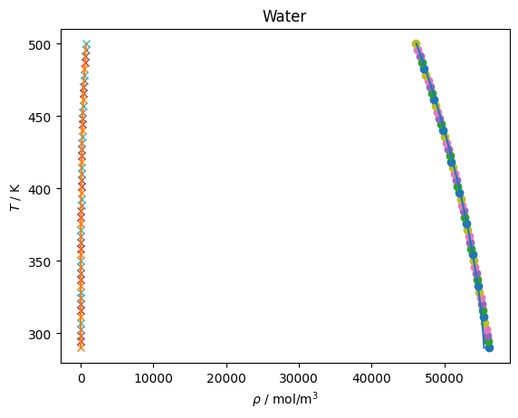
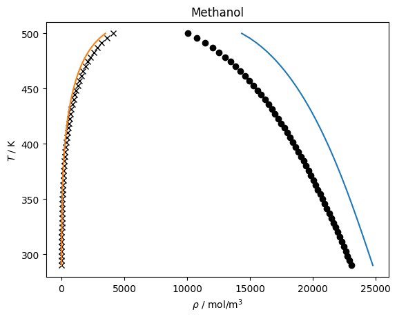
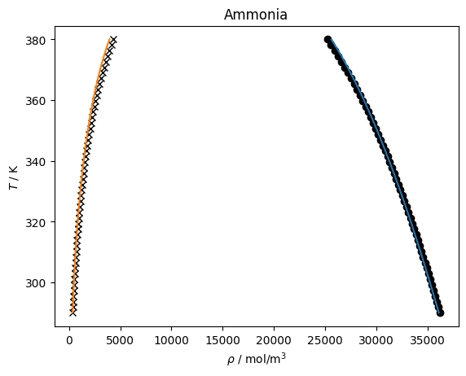

Association - Dufal et al. model¶
The following figures show the checks of the results from the model of Dufal against the models implemewnted in CoolProp or calculated values from the paper of Dufal; in the case of methanol, a different EOS is implemented than in REFPROP, but that cannot explain the large deviations.
Note: There appears to be a typo in the methanol parameters as-published
[1]:
import teqp, numpy as np, matplotlib.pyplot as plt, CoolProp.CoolProp as CP
[2]:
Dufal_water = {
"nonpolar": {
"kind": "SAFT-VR-Mie",
"model": {
"coeffs": [
{
"name": "Water",
"BibTeXKey": "Dufal-2015",
"m": 1.0,
"sigma_Angstrom": 3.0555,
"epsilon_over_k": 418.00,
"lambda_r": 35.823,
"lambda_a": 6.0
}
]
}
},
"association": {
"kind": "Dufal",
"model": {
"sigma / m": [3.0555e-10],
"epsilon / J/mol": [3475.445374388054],
"lambda_r": [35.823],
"epsilon_HB / J/mol": [13303.140189045183],
"K_HB / m^3": [496.66e-30],
"kmat": [[0.0]],
"Delta_rule": "Dufal",
"molecule_sites": [["e","e","H","H"]]
}
}
}
Dufal_methanol = {
"nonpolar": {
"kind": "SAFT-VR-Mie",
"model": {
"coeffs": [
{
"name": "Methanol",
"BibTeXKey": "Dufal-2015",
"m": 1.7989,
"sigma_Angstrom": 3.1425,
"epsilon_over_k": 276.96,
"lambda_r": 16.968,
"lambda_a": 6.0
}
]
}
},
"association": {
"kind": "Dufal",
"model": {
"sigma / m": [3.1425e-10],
"epsilon / J/mol": [276.96*8.31446261815324],
"lambda_r": [16.968],
"epsilon_HB / J/mol": [2156.0*8.31446261815324],
"K_HB / m^3": [222.18e-30],
"kmat": [[0.0]],
"Delta_rule": "Dufal",
"molecule_sites": [["e","H","H"]]
}
}
}
Dufal_ammonia = {
"nonpolar": {
"kind": "SAFT-VR-Mie",
"model": {
"coeffs": [
{
"name": "Ammonia",
"BibTeXKey": "Dufal-2015",
"m": 1.0,
"sigma_Angstrom": 3.3309,
"epsilon_over_k": 323.70,
"lambda_r": 36.832,
"lambda_a": 6.0
}
]
}
},
"association": {
"kind": "Dufal",
"model": {
"sigma / m": [3.3309e-10],
"epsilon / J/mol": [323.70*8.31446261815324],
"lambda_r": [36.832],
"epsilon_HB / J/mol": [1105.0*8.31446261815324],
"K_HB / m^3": [560.73e-30],
"kmat": [[0.0]],
"Delta_rule": "Dufal",
"molecule_sites": [["e","H","H","H"]]
}
}
}
# Tabulated values from Dufal for non-bonded fraction for water from the Mie kernel (Eq. 30):
# Note the last "liquid" point in Dufal is actually for the vapor phase
TL_Dufal = [252.10,270.00,290.00,300.00,310.00,314.14,330.00,348.85,350.00,370.00,388.70,390.00,400.00,410.00,416.67,430.00,450.00,450.00,470.00,476.76,490.00,500.00,503.19,510.00,530.00,550.00,556.52,570.00,579.71,590.00,600.00,610.00,620.00]
XL_A_Dufal = [0.060,0.073,0.089,0.098,0.106,0.110,0.124,0.142,0.143,0.162,0.180,0.182,0.192,0.202,0.209,0.223,0.245,0.245,0.267,0.275,0.290,0.302,0.306,0.314,0.339,0.364,0.373,0.391,0.405,0.420,0.435,0.451,0.468]
TV_Dufal = [300.00,314.14,348.85,350.00,370.00,388.70,390.00,400.00,410.00,416.67,430.00,450.00,450.00,470.00,476.76,490.00,500.00,510.00,530.00,550.00,570.00,590.00,600.00,610.00,620.00,638.60]
XV_A_Dufal = [0.998,0.997,0.992,0.992,0.988,0.982,0.982,0.979,0.975,0.973,0.967,0.958,0.958,0.947,0.943,0.935,0.928,0.921,0.906,0.890,0.872,0.852,0.841,0.829,0.816,0.789]
[3]:
model = teqp.make_model({"kind":"genericSAFT", "model":Dufal_water})
anc = teqp.build_ancillaries(model, 676, 7000, 290)
z = np.array([1.0])
for T in np.linspace(290, 678):
rhoL, rhoV = model.pure_VLE_T(T, anc.rhoL(T), anc.rhoV(T), 10)
X_A = model.get_assoc_calcs(T, rhoL, z)['X_A']
plt.plot(T, X_A[0],'o')
X_A = model.get_assoc_calcs(T, rhoV, z)['X_A']
plt.plot(T, X_A[0],'x')
plt.plot(TL_Dufal, XL_A_Dufal)
plt.plot(TV_Dufal, XV_A_Dufal)
plt.gca().set(xlabel='$T$ / K', ylabel='$X_A$ (non-bonded site fraction)');
plt.figure()
Ts = np.linspace(290, 500)
for T in Ts:
rhoL, rhoV = model.pure_VLE_T(T, anc.rhoL(T), anc.rhoV(T), 10)
plt.plot(rhoL, T,'o')
plt.plot(rhoV, T,'x')
plt.plot(CP.PropsSI('Dmolar','T',Ts,'Q',0,'Water'), Ts)
plt.plot(CP.PropsSI('Dmolar','T',Ts,'Q',1,'Water'), Ts)
plt.title('Water')
plt.gca().set(xlabel=r'$\rho$ / mol/m$^3$', ylabel=r'$T$ / K');


[4]:
model = teqp.make_model({"kind":"genericSAFT", "model": Dufal_methanol})
anc = teqp.build_ancillaries(model, 520, 5000, 290)
z = np.array([1.0])
Ts = np.linspace(290, 500)
for T in Ts:
rhoL, rhoV = model.pure_VLE_T(T, anc.rhoL(T), anc.rhoV(T), 10)
plt.plot(rhoL, T,'ko')
plt.plot(rhoV, T,'kx')
plt.plot(CP.PropsSI('Dmolar','T',Ts,'Q',0,'Methanol'), Ts)
plt.plot(CP.PropsSI('Dmolar','T',Ts,'Q',1,'Methanol'), Ts)
plt.title('Methanol')
plt.gca().set(xlabel=r'$\rho$ / mol/m$^3$', ylabel=r'$T$ / K');

[5]:
model = teqp.make_model({"kind":"genericSAFT", "model": Dufal_ammonia})
anc = teqp.build_ancillaries(model, 520, 5000, 290)
z = np.array([1.0])
Ts = np.linspace(290, 380)
for T in Ts:
rhoL, rhoV = model.pure_VLE_T(T, anc.rhoL(T), anc.rhoV(T), 10)
plt.plot(rhoL, T,'ko')
plt.plot(rhoV, T,'kx')
plt.plot(CP.PropsSI('Dmolar','T',Ts,'Q',0,'Ammonia'), Ts)
plt.plot(CP.PropsSI('Dmolar','T',Ts,'Q',1,'Ammonia'), Ts)
plt.title('Ammonia')
plt.gca().set(xlabel=r'$\rho$ / mol/m$^3$', ylabel=r'$T$ / K');

[6]:
# ammonia+water VLE at constant temperature
ammonia = teqp.make_model({"kind":"genericSAFT", "model": Dufal_ammonia})
Dufal_ammoniawater = {
"nonpolar": {
"kind": "SAFT-VR-Mie",
"model": {
"coeffs": [
{
"name": "Ammonia",
"BibTeXKey": "Dufal-2015",
"m": 1.0,
"sigma_Angstrom": 3.3309,
"epsilon_over_k": 323.70,
"lambda_r": 36.832,
"lambda_a": 6.0
},
{
"name": "Water",
"BibTeXKey": "Dufal-2015",
"m": 1.0,
"sigma_Angstrom": 3.0555,
"epsilon_over_k": 418.00,
"lambda_r": 35.823,
"lambda_a": 6.0
}
]
}
},
"association": {
"kind": "Dufal",
"model": {
"sigma / m": [3.3309e-10, 3.0555e-10],
"epsilon / J/mol": [323.70*8.31446261815324, 3475.445374388054],
"lambda_r": [36.832, 35.823],
"epsilon_HB / J/mol": [1105.0*8.31446261815324, 13303.140189045183],
"K_HB / m^3": [560.73e-30, 496.66e-30],
"kmat": [[0.0,0.0],[0,0]],
"Delta_rule": "Dufal",
"molecule_sites": [["e","H","H","H"],["e","e","H","H"]]
}
}
}
T = 298.15
rhoL0, rhoV0 = ammonia.pure_VLE_T(T, anc.rhoL(T), anc.rhoV(T), 10)
ammoniawater = teqp.make_model({"kind":"genericSAFT", "model": Dufal_ammoniawater})
ammoniawater.trace_VLE_isotherm_binary(T, np.array([rhoL0, 0]), np.array([rhoV0, 0]))
[6]:
[{'T / K': 298.15,
'c': -1.0,
'drho/dt': [-0.3009031150143573,
0.9532863025715441,
-0.026505253934592687,
0.00011053503374651266],
'dt': 1e-05,
'pL / Pa': -1348980.0114703327,
'pV / Pa': 850585.1099931961,
'rhoL / mol/m^3': [35515.45114721886, 0.0],
'rhoV / mol/m^3': [487.03357583366795, 0.0],
't': 0.0,
'xL_0 / mole frac.': 1.0,
'xV_0 / mole frac.': 1.0},
{'T / K': 298.15,
'c': -1.0,
'drho/dt': [-0.31109872729343796,
0.9503192359545914,
-0.010532216621598695,
6.375045523910206e-05],
'dt': 4.5e-05,
'pL / Pa': 530725.4885882735,
'pV / Pa': 530725.4885943136,
'rhoL / mol/m^3': [35626.35313673362, 9.532863025498762e-06],
'rhoV / mol/m^3': [262.742533599565, 6.394949560729698e-10],
't': 1e-05,
'xL_0 / mole frac.': 0.9999999997324209,
'xV_0 / mole frac.': 0.9999999999975661},
{'T / K': 298.15,
'c': -1.0,
'drho/dt': [-0.3110987287489849,
0.9503192354218599,
-0.010532221696140152,
6.375045478498421e-05],
'dt': 0.00020250000000000002,
'pL / Pa': 530725.4878200889,
'pV / Pa': 530725.4878138459,
'rhoL / mol/m^3': [35626.35312273521, 5.2297228631004934e-05],
'rhoV / mol/m^3': [262.74253312561655, 3.5082654315836237e-09],
't': 5.5e-05,
'xL_0 / mole frac.': 0.9999999985320634,
'xV_0 / mole frac.': 0.9999999999866476},
{'T / K': 298.15,
'c': -1.0,
'drho/dt': [-0.3110987353738346,
0.950319233256463,
-0.010532221395738667,
6.375045275703689e-05],
'dt': 0.0009112500000000001,
'pL / Pa': 530725.4843104482,
'pV / Pa': 530725.4843017324,
'rhoL / mol/m^3': [35626.35305973835, 0.0002447368735843725],
'rhoV / mol/m^3': [262.7425309928432, 1.641773232019293e-08],
't': 0.0002575,
'xL_0 / mole frac.': 0.999999993130454,
'xV_0 / mole frac.': 0.999999999937514},
{'T / K': 298.15,
'c': -1.0,
'drho/dt': [-0.3110987651829838,
0.9503192235059291,
-0.010532220686610062,
6.375044363083975e-05],
'dt': 0.004100625,
'pL / Pa': 530725.4684955478,
'pV / Pa': 530725.4684972229,
'rhoL / mol/m^3': [35626.352776249725, 0.001110715270445871],
'rhoV / mol/m^3': [262.74252139536407, 7.451032823686246e-08],
't': 0.00116875,
'xL_0 / mole frac.': 0.9999999688232124,
'xV_0 / mole frac.': 0.9999999997164131},
{'T / K': 298.15,
'c': -1.0,
'drho/dt': [-0.31109889932897994,
0.9503191796398444,
-0.010532216330687407,
6.375040256373021e-05],
'dt': 0.0184528125,
'pL / Pa': 530725.397386983,
'pV / Pa': 530725.3973768814,
'rhoL / mol/m^3': [35626.35150054978, 0.005007617946395683],
'rhoV / mol/m^3': [262.74247820668023, 3.359269069501529e-07],
't': 0.005269375,
'xL_0 / mole frac.': 0.9999998594406379,
'xV_0 / mole frac.': 0.9999999987214594},
{'T / K': 298.15,
'c': -1.0,
'drho/dt': [-0.3110995029837769,
0.9503189822425291,
-0.010532196764242713,
6.375021776229736e-05],
'dt': 0.08303765625,
'pL / Pa': 530725.0773146152,
'pV / Pa': 530725.0773356715,
'rhoL / mol/m^3': [35626.345759893484, 0.02254367776217374],
'rhoV / mol/m^3': [262.7422838578328, 1.5122994272035906e-06],
't': 0.0237221875,
'xL_0 / mole frac.': 0.9999993672193144,
'xV_0 / mole frac.': 0.9999999942441719},
{'T / K': 298.15,
'c': -1.0,
'drho/dt': [-0.3111022194027503,
0.95031809395849,
-0.01053210870630424,
6.374938616736466e-05],
'dt': 0.373669453125,
'pL / Pa': 530723.6371623278,
'pV / Pa': 530723.6371566487,
'rhoL / mol/m^3': [35626.319926807926, 0.10145590185693522],
'rhoV / mol/m^3': [262.74140929255907, 6.805933568635144e-06],
't': 0.10675984375,
'xL_0 / mole frac.': 0.9999971522286573,
'xV_0 / mole frac.': 0.9999999740964569},
{'T / K': 298.15,
'c': -1.0,
'drho/dt': [-0.3111144427047333,
0.9503140967646987,
-0.01053171245862241,
6.37456442239256e-05],
'dt': 1.6815125390625,
'pL / Pa': 530717.1564760655,
'pV / Pa': 530717.1564786778,
'rhoL / mol/m^3': [35626.20367512748, 0.456559997502588],
'rhoV / mol/m^3': [262.73747383929725, 3.062643269797513e-05],
't': 0.480429296875,
'xL_0 / mole frac.': 0.9999871848779961,
'xV_0 / mole frac.': 0.9999998834333425},
{'T / K': 298.15,
'c': -1.0,
'drho/dt': [-0.3111694357864459,
0.950296111088445,
-0.010529929779497732,
6.372881021020651e-05],
'dt': 5.2777905117345005,
'pL / Pa': 530687.9960161746,
'pV / Pa': 530687.9960124324,
'rhoL / mol/m^3': [35625.680486052624, 2.054509945307028],
'rhoV / mol/m^3': [262.7197661316354, 0.0001378013783841202],
't': 2.1619418359375002,
'xL_0 / mole frac.': 0.9999423339725206,
'xV_0 / mole frac.': 0.9999994754817723},
{'T / K': 298.15,
'c': -1.0,
'drho/dt': [-0.31134191836451947,
0.9502396771874071,
-0.010524339087906304,
6.367602326602922e-05],
'dt': 11.293354277652224,
'pL / Pa': 530596.4970624149,
'pV / Pa': 530596.49704234,
'rhoL / mol/m^3': [35624.037743711626, 7.069824808594325],
'rhoV / mol/m^3': [262.6642061245047, 0.00047400935551993517],
't': 7.439732347672001,
'xL_0 / mole frac.': 0.9998015827940515,
'xV_0 / mole frac.': 0.9999981953822065},
{'T / K': 298.15,
'c': -1.0,
'drho/dt': [-0.31171035841668493,
0.9501190124752473,
-0.010512399750116204,
6.356332582580064e-05],
'dt': 20.219295337907475,
'pL / Pa': 530400.8483027518,
'pV / Pa': 530400.8483113195,
'rhoL / mol/m^3': [35620.51956784696, 17.800536659241242],
'rhoV / mol/m^3': [262.54541848241206, 0.0011924885519618762],
't': 18.733086625324226,
'xL_0 / mole frac.': 0.9995005225665227,
'xV_0 / mole frac.': 0.999995457992973},
{'T / K': 298.15,
'c': -1.0,
'drho/dt': [-0.31236784535778556,
0.9499032908210953,
-0.010491103802349255,
6.336242141344015e-05],
'dt': 32.05406109192583,
'pL / Pa': 530051.0387646854,
'pV / Pa': 530051.0387380088,
'rhoL / mol/m^3': [35614.21035243601, 37.00909203195248],
'rhoV / mol/m^3': [262.33308063405644, 0.002475661269434341],
't': 38.9523819632317,
'xL_0 / mole frac.': 0.9989619123101919,
'xV_0 / mole frac.': 0.9999905629976188},
{'T / K': 298.15,
'c': -1.0,
'drho/dt': [-0.31340453699814785,
0.9495621263658921,
-0.010457551608343767,
6.304618299002517e-05],
'dt': 46.77777988037518,
'pL / Pa': 529497.7195792794,
'pV / Pa': 529497.7196046263,
'rhoL / mol/m^3': [35604.181060955816, 67.45187959577942],
'rhoV / mol/m^3': [261.9973365749719, 0.00450160846417981],
't': 71.00644305515753,
'xL_0 / mole frac.': 0.9981090890986631,
'xV_0 / mole frac.': 0.9999828184088502},
{'T / K': 298.15,
'c': -1.0,
'drho/dt': [-0.3149051477799579,
0.9490660650485994,
-0.010409042097751927,
6.258959691875612e-05],
'dt': 64.35837108709012,
'pL / Pa': 528692.9495015144,
'pV / Pa': 528692.949511752,
'rhoL / mol/m^3': [35589.48553843193, 111.85867700851091],
'rhoV / mol/m^3': [261.5092922019919, 0.007440067314551471],
't': 117.78422293553271,
'xL_0 / mole frac.': 0.9968668216991076,
'xV_0 / mole frac.': 0.9999715503201266},
{'T / K': 298.15,
'c': -1.0,
'drho/dt': [-0.3169462807598973,
0.9483870887527648,
-0.010343169685654244,
6.19707783921092e-05],
'dt': 84.80807950481592,
'pL / Pa': 527590.9216072261,
'pV / Pa': 527590.9216132702,
'rhoL / mol/m^3': [35569.15292957848, 172.9171522275068],
'rhoV / mol/m^3': [260.84150827902755, 0.011448261108294243],
't': 182.14259402262283,
'xL_0 / mole frac.': 0.9951620834542673,
'xV_0 / mole frac.': 0.9999561122048983},
{'T / K': 298.15,
'c': -1.0,
'drho/dt': [-0.3195953290461591,
0.9474986005168632,
-0.010257871538898754,
6.117151516063689e-05],
'dt': 108.2065363028577,
'pL / Pa': 526147.7891260535,
'pV / Pa': 526147.7891376888,
'rhoL / mol/m^3': [35542.16067078346, 253.31031427913294],
'rhoV / mol/m^3': [259.96795286894064, 0.016669863420093727],
't': 266.95067352743877,
'xL_0 / mole frac.': 0.9929233976447792,
'xV_0 / mole frac.': 0.999935881348501},
{'T / K': 298.15,
'c': -1.0,
'drho/dt': [-0.3229098929901436,
0.946375266618026,
-0.010151459077644335,
6.017764829482899e-05],
'dt': 134.71777827306167,
'pL / Pa': 524321.169994995,
'pV / Pa': 524321.1700048461,
'rhoL / mol/m^3': [35507.39838710184, 355.7749759791602],
'rhoV / mol/m^3': [258.8637654924597, 0.023234992065452455],
't': 375.15720983029644,
'xL_0 / mole frac.': 0.9900796571352659,
'xV_0 / mole frac.': 0.9999102504489528},
{'T / K': 298.15,
'c': -1.0,
'drho/dt': [-0.32693750736908667,
0.9449928092206256,
-0.010022640272707873,
5.89793414726952e-05],
'dt': 164.60568268475006,
'pL / Pa': 522069.448372066,
'pV / Pa': 522069.4483732332,
'rhoL / mol/m^3': [35463.624176795005, 483.1752282585226],
'rhoV / mol/m^3': [257.50490539395713, 0.03126079809831117],
't': 509.8749881033581,
'xL_0 / mole frac.': 0.9865586022606898,
'xV_0 / mole frac.': 0.9998786158908843},
{'T / K': 298.15,
'c': -1.0,
'drho/dt': [-0.33171556830214927,
0.9433278067268672,
-0.009870536328391875,
5.757126319217159e-05],
'dt': 198.25242509299477,
'pL / Pa': 519350.9265948534,
'pV / Pa': 519350.9266029825,
'rhoL / mol/m^3': [35409.41304487993, 638.5890166367051],
'rhoV / mol/m^3': [255.86771856214293, 0.04085241912014649],
't': 674.4806707881081,
'xL_0 / mole frac.': 0.9822850371694126,
'xV_0 / mole frac.': 0.9998403632243988},
{'T / K': 298.15,
'c': -1.0,
'drho/dt': [-0.3372714396833285,
0.9413575228149944,
-0.009694693540779743,
5.5952681178581764e-05],
'dt': 236.1836836727786,
'pL / Pa': 516122.8166497499,
'pV / Pa': 516122.8166443896,
'rhoL / mol/m^3': [35343.095399031896, 825.4101048154494],
'rhoV / mol/m^3': [253.928420690112, 0.05210426368686329],
't': 872.7330958811028,
'xL_0 / mole frac.': 0.9771787610984466,
'xV_0 / mole frac.': 0.999794849373997},
{'T / K': 298.15,
'c': -1.0,
'drho/dt': [-0.3436227598495491,
0.9390597634074298,
-0.009495089930022167,
5.4127458679543876e-05],
'dt': 279.10501882155313,
'pL / Pa': 512340.01572176814,
'pV / Pa': 512340.0157209673,
'rhoL / mol/m^3': [35262.68179677486, 1047.4709930047038],
'rhoV / mol/m^3': [251.66246879441854, 0.06510170274367937],
't': 1108.9167795538815,
'xL_0 / mole frac.': 0.971152118277521,
'xV_0 / mole frac.': 0.9997413803239149},
{'T / K': 298.15,
'c': -1.0,
'drho/dt': [-0.35077799543634824,
0.9364127416392805,
-0.009272135592351108,
5.21039382724843e-05],
'dt': 327.9559440725397,
'pL / Pa': 507953.5643131882,
'pV / Pa': 507953.5643367281,
'rhoL / mol/m^3': [35165.7679125346, 1309.1961821510356],
'rhoV / mol/m^3': [249.0437693090449, 0.07992333731136785],
't': 1388.0217983754346,
'xL_0 / mole frac.': 0.964106991887573,
'xV_0 / mole frac.': 0.9996791821104514},
{'T / K': 298.15,
'c': -1.0,
'drho/dt': [-0.3587373153874435,
0.9333949085860429,
-0.00902666520824713,
4.989469660316371e-05],
'dt': 383.9925791243792,
'pL / Pa': 502908.6190921813,
'pV / Pa': 502908.6190713023,
'rhoL / mol/m^3': [35049.41032651237, 1615.8007523074207],
'rhoV / mol/m^3': [246.0436363641398, 0.09664412676029603],
't': 1715.9777424479744,
'xL_0 / mole frac.': 0.9559309573089896,
'xV_0 / mole frac.': 0.9996073615965353},
{'T / K': 298.15,
'c': -1.0,
'drho/dt': [-0.36749389985627917,
0.9299846746614517,
-0.008759920403315455,
4.751614980652829e-05],
'dt': 448.9185032596913,
'pL / Pa': 497141.6639637947,
'pV / Pa': 497141.66393197584,
'rhoL / mol/m^3': [34909.95809230483, 1973.5585359240806],
'rhoV / mol/m^3': [242.62935769177275, 0.11533984787521437],
't': 2099.9703215723534,
'xL_0 / mole frac.': 0.9464921266641476,
'xV_0 / mole frac.': 0.9995248512159307},
{'T / K': 298.15,
'c': -1.0,
'drho/dt': [-0.3770358786050042,
0.9261598910064105,
-0.00847351825560286,
4.4987980666992797e-05],
'dt': 525.1019279629584,
'pL / Pa': 490576.48795980215,
'pV / Pa': 490576.4879610026,
'rhoL / mol/m^3': [34742.81490748277, 2390.1809627941643],
'rhoV / mol/m^3': [238.76212407520765, 0.13609369133517055],
't': 2548.8888248320445,
'xL_0 / mole frac.': 0.9356318846143147,
'xV_0 / mole frac.': 0.9994303277244698},
{'T / K': 298.15,
'c': -1.0,
'drho/dt': [-0.3873492637490114,
0.9218968526894107,
-0.00816939914749836,
4.233233651864648e-05],
'dt': 615.9597173718626,
'pL / Pa': 483118.0735966861,
'pV / Pa': 483118.07357594225,
'rhoL / mol/m^3': [34542.087159904426, 2875.3803659980517],
'rhoV / mol/m^3': [234.3938792016013, 0.1590064723518254],
't': 3073.9907527950027,
'xL_0 / mole frac.': 0.9231540626311079,
'xV_0 / mole frac.': 0.9993220869063497},
{'T / K': 298.15,
'c': -1.0,
'drho/dt': [-0.39842263159141544,
0.9171683524054354,
-0.007849739847433762,
3.957269140624046e-05],
'dt': 726.6967102180334,
'pL / Pa': 474642.72560726106,
'pV / Pa': 474642.7255858295,
'rhoL / mol/m^3': [34300.032133079105, 3441.760829744836],
'rhoV / mol/m^3': [229.4622219563978, 0.18421338800238815],
't': 3689.950470166865,
'xL_0 / mole frac.': 0.9088077020311407,
'xV_0 / mole frac.': 0.9991978391141751},
{'T / K': 298.15,
'c': -1.0,
'drho/dt': [-0.41025527989717603,
0.9119397467476241,
-0.007516799127303844,
3.673212135999947e-05],
'dt': 865.9077476106264,
'pL / Pa': 464980.8547209501,
'pV / Pa': 464980.8547601013,
'rhoL / mol/m^3': [34006.12542716575, 4106.342235184902],
'rhoV / mol/m^3': [223.88148960566866, 0.21191375023227818],
't': 4416.647180384899,
'xL_0 / mole frac.': 0.8922572458030225,
'xV_0 / mole frac.': 0.9990543507882929},
{'T / K': 298.15,
'c': -1.0,
'drho/dt': [-0.42287336502017114,
0.9061603995379862,
-0.007172609091803313,
3.3830314941563436e-05],
'dt': 1049.7038463535232,
'pL / Pa': 453883.6396552026,
'pV / Pa': 453883.63964834786,
'rhoL / mol/m^3': [33645.3122460024, 4893.462071944016],
'rhoV / mol/m^3': [217.52541820152535, 0.2424298133356311],
't': 5282.554927995526,
'xL_0 / mole frac.': 0.8730249687866886,
'xV_0 / mole frac.': 0.9988867511180113},
{'T / K': 298.15,
'c': -1.0,
'drho/dt': [-0.43636811765601796,
0.8997423945778684,
-0.006818235785698247,
3.087713674926759e-05],
'dt': 1315.7974418357242,
'pL / Pa': 440947.6911216527,
'pV / Pa': 440947.69114229275,
'rhoL / mol/m^3': [33194.18050173683, 5841.240509616473],
'rhoV / mol/m^3': [210.1877295865151, 0.2763434459919454],
't': 6332.258774349049,
'xL_0 / mole frac.': 0.850360509550606,
'xV_0 / mole frac.': 0.9986869804332388},
{'T / K': 298.15,
'c': -1.0,
'drho/dt': [-0.45101552172260045,
0.8924927884947415,
-0.0064514242120567835,
2.7853315742402383e-05],
'dt': 1810.2288675274342,
'pL / Pa': 425394.7748477906,
'pV / Pa': 425394.7748712937,
'rhoL / mol/m^3': [32610.123462539377, 7020.259459503709],
'rhoV / mol/m^3': [201.4659990951728, 0.31490978753200344],
't': 7648.056216184774,
'xL_0 / mole frac.': 0.8228566331717445,
'xV_0 / mole frac.': 0.9984393479577641},
{'T / K': 298.15,
'c': -1.0,
'drho/dt': [-0.46793938060577095,
0.8837398337385057,
-0.00605324184321827,
2.4603113066694497e-05],
'dt': 2459.4452407621616,
'pL / Pa': 404948.6246905178,
'pV / Pa': 404948.6246820389,
'rhoL / mol/m^3': [31777.86814093376, 8627.7583937791],
'rhoV / mol/m^3': [190.16385662179917, 0.3622535668432215],
't': 9458.285083712208,
'xL_0 / mole frac.': 0.7864713621909337,
'xV_0 / mole frac.': 0.9980986670725365},
{'T / K': 298.15,
'c': -1.0,
'drho/dt': [-0.48476328085003006,
0.8746269025427289,
-0.005687039625699997,
2.1640757729143115e-05],
'dt': 2206.2874147800967,
'pL / Pa': 381141.33540967107,
'pV / Pa': 381141.3353808051,
'rhoL / mol/m^3': [30726.240805157922, 10567.20896686408],
'rhoV / mol/m^3': [177.23257381773493, 0.4131008397780481],
't': 11664.572498492304,
'xL_0 / mole frac.': 0.7440947892412758,
'xV_0 / mole frac.': 0.9976745798028887},
{'T / K': 298.15,
'c': -1.0,
'drho/dt': [-0.4984987778596882,
0.8668735172203932,
-0.00541047473034949,
1.943023662648309e-05],
'dt': 2321.0264320528586,
'pL / Pa': 358209.79509951174,
'pV / Pa': 358209.795105216,
'rhoL / mol/m^3': [29641.07565266955, 12488.112495818637],
'rhoV / mol/m^3': [165.00381231099806, 0.45829443782398777],
't': 13870.859913272401,
'xL_0 / mole frac.': 0.7035757619680888,
'xV_0 / mole frac.': 0.9972302151421311},
{'T / K': 298.15,
'c': -1.0,
'drho/dt': [-0.5104684599811992,
0.8598808493704716,
-0.005184200825426099,
1.766749921251836e-05],
'dt': 2523.6579591870377,
'pL / Pa': 334752.5148013532,
'pV / Pa': 334752.51479479263,
'rhoL / mol/m^3': [28469.729496492895, 14491.827733172784],
'rhoV / mol/m^3': [152.71892297899666, 0.50125314305867],
't': 16191.88634532526,
'xL_0 / mole frac.': 0.662679179534816,
'xV_0 / mole frac.': 0.9967285434872534},
{'T / K': 298.15,
'c': -1.0,
'drho/dt': [-0.5213013565024214,
0.8533580870020493,
-0.004987062647628024,
1.6219954851094346e-05],
'dt': 2771.7257970835303,
'pL / Pa': 309799.3171932399,
'pV / Pa': 309799.31721945724,
'rhoL / mol/m^3': [27167.396150654396, 16653.430851867437],
'rhoV / mol/m^3': [139.89292776711616, 0.5439256459113281],
't': 18715.544304512296,
'xL_0 / mole frac.': 0.6199653910933937,
'xV_0 / mole frac.': 0.9961269023572351},
{'T / K': 298.15,
'c': -1.0,
'drho/dt': [-0.5312095080671894,
0.8472268671963656,
-0.004805602279398599,
1.5045884341440156e-05],
'dt': 3068.9101490427965,
'pL / Pa': 282878.16349698603,
'pV / Pa': 282878.16347593884,
'rhoL / mol/m^3': [25708.34129075812, 19009.985952968265],
'rhoV / mol/m^3': [126.32777166410042, 0.5871684609990446],
't': 21487.270101595826,
'xL_0 / mole frac.': 0.5748949675742799,
'xV_0 / mole frac.': 0.9953735276522979},
{'T / K': 298.15,
'c': -1.0,
'drho/dt': [-0.540336662731652,
0.841436211745165,
-0.004625178064250846,
1.4136510118179204e-05],
'dt': 3452.0033673988805,
'pL / Pa': 253545.28763389587,
'pV / Pa': 253545.28759547582,
'rhoL / mol/m^3': [24063.670912221663, 21600.92552998882],
'rhoV / mol/m^3': [111.8596745017751, 0.6318537775909859],
't': 24556.180250638623,
'xL_0 / mole frac.': 0.5269655879402054,
'xV_0 / mole frac.': 0.9943830990008259},
{'T / K': 298.15,
'c': -1.0,
'drho/dt': [-0.5488569384171296,
0.8359045847560193,
-0.0044256245429127655,
1.3514716090899735e-05],
'dt': 3588.80797336189,
'pL / Pa': 221126.4276919216,
'pV / Pa': 221126.42768445628,
'rhoL / mol/m^3': [22183.26016050455, 24495.754740354692],
'rhoV / mol/m^3': [96.23612551347789, 0.6794664580814603],
't': 28008.183618037503,
'xL_0 / mole frac.': 0.4752298266709183,
'xV_0 / mole frac.': 0.9929890903593628},
{'T / K': 298.15,
'c': -1.0,
'drho/dt': [-0.5544805551145389,
0.8321857692839582,
-0.004261364148907681,
1.3293987312150658e-05],
'dt': 2933.0738963534163,
'pL / Pa': 196495.4253091663,
'pV / Pa': 196495.4253299148,
'rhoL / mol/m^3': [20707.463176092035, 26726.6015965729],
'rhoV / mol/m^3': [84.61502342792586, 0.7152717963763382],
't': 30683.03250867915,
'xL_0 / mole frac.': 0.436552576198893,
'xV_0 / mole frac.': 0.9916176101993301},
{'T / K': 298.15,
'c': -1.0,
'drho/dt': [-0.5590691963034844,
0.8291108859905518,
-0.004095399862930065,
1.3285368425688106e-05],
'dt': 2552.654271119634,
'pL / Pa': 174249.54183493555,
'pV / Pa': 174249.54185104975,
'rhoL / mol/m^3': [19333.154199314868, 28776.699848563694],
'rhoV / mol/m^3': [74.29877521089828, 0.7480341834772921],
't': 33151.17957230288,
'xL_0 / mole frac.': 0.4018543515030135,
'xV_0 / mole frac.': 0.9900324318979862},
{'T / K': 298.15,
'c': -1.0,
'drho/dt': [-0.5627997877197536,
0.8265839069520551,
-0.003929825677336374,
1.3439587663380614e-05],
'dt': 2225.746134706672,
'pL / Pa': 154688.08371832967,
'pV / Pa': 154688.08365607422,
'rhoL / mol/m^3': [18084.591254220744, 30619.238374126016],
'rhoV / mol/m^3': [65.36460636209489, 0.7777468228450236],
't': 35376.92570700955,
'xL_0 / mole frac.': 0.37131764364778186,
'xV_0 / mole frac.': 0.9882413191337422},
{'T / K': 298.15,
'c': -1.0,
'drho/dt': [-0.5662078522799722,
0.8242539868277932,
-0.0037460680557439463,
1.3751776391058605e-05],
'dt': 2225.746134706672,
'pL / Pa': 135714.69520623982,
'pV / Pa': 135714.69513252738,
'rhoL / mol/m^3': [16828.094374759086, 32456.377826371307],
'rhoV / mol/m^3': [56.81868770349085, 0.8079775818862941],
't': 37602.67184171622,
'xL_0 / mole frac.': 0.34144820109026375,
'xV_0 / mole frac.': 0.9859791022457217},
{'T / K': 298.15,
'c': -1.0,
'drho/dt': [-0.568630426855959,
0.8225852768820584,
-0.0035916168580053622,
1.410044566813708e-05],
'dt': 1827.9191062504974,
'pL / Pa': 121676.63196499646,
'pV / Pa': 121676.63199552287,
'rhoL / mol/m^3': [15861.911531940847, 33858.42688010262],
'rhoV / mol/m^3': [50.5698423984294, 0.8316763046156722],
't': 39305.40258364675,
'xL_0 / mole frac.': 0.31902259796563875,
'xV_0 / mole frac.': 0.9838200052138459},
{'T / K': 298.15,
'c': -1.0,
'drho/dt': [-0.5710797678491014,
0.8208874844559244,
-0.0034112174333109377,
1.4582999929112178e-05],
'dt': 1827.9191062504974,
'pL / Pa': 107147.19667124748,
'pV / Pa': 107147.19678234181,
'rhoL / mol/m^3': [14820.240462494312, 35360.480862333374],
'rhoV / mol/m^3': [44.167158485013566, 0.8578746465464361],
't': 41133.321689897246,
'xL_0 / mole frac.': 0.2953373341638629,
'xV_0 / mole frac.': 0.980946718150328},
{'T / K': 298.15,
'c': -1.0,
'drho/dt': [-0.5729255768224042,
0.8196009247178587,
-0.003256900057296907,
1.5045361597673408e-05],
'dt': 1530.5811627154353,
'pL / Pa': 96085.23140747845,
'pV / Pa': 96085.23146224619,
'rhoL / mol/m^3': [13991.558393493582, 36548.78073284068],
'rhoV / mol/m^3': [39.3357970837063, 0.8793277882479742],
't': 42582.043466376665,
'xL_0 / mole frac.': 0.27683942441540166,
'xV_0 / mole frac.': 0.9781344011476335},
{'T / K': 298.15,
'c': -1.0,
'drho/dt': [-0.5747982464642494,
0.8182893579672108,
-0.003082572885297835,
1.5608993129366956e-05],
'dt': 1530.5811627154353,
'pL / Pa': 84888.33696313202,
'pV / Pa': 84888.33696551636,
'rhoL / mol/m^3': [13113.206864275073, 37802.237037662606],
'rhoV / mol/m^3': [34.48276228634632, 0.9027776300758239],
't': 44112.6246290921,
'xL_0 / mole frac.': 0.25754870937648894,
'xV_0 / mole frac.': 0.9744873857454736},
{'T / K': 298.15,
'c': -1.0,
'drho/dt': [-0.576284316992878,
0.8172440248290407,
-0.0029308035141548255,
1.6125870431254637e-05],
'dt': 1306.6388934396384,
'pL / Pa': 76119.12222644687,
'pV / Pa': 76119.12237624887,
'rhoL / mol/m^3': [12390.702962699213, 38828.809251438026],
'rhoV / mol/m^3': [30.707517517546734, 0.9226917161367534],
't': 45367.9640601762,
'xL_0 / mole frac.': 0.2419137244200311,
'xV_0 / mole frac.': 0.9708287824048232},
{'T / K': 298.15,
'c': -1.0,
'drho/dt': [-0.5777924022256987,
0.8161790842220344,
-0.0027644401756335554,
1.6710865051459888e-05],
'dt': 1306.6388934396384,
'pL / Pa': 67424.03183662891,
'pV / Pa': 67424.03183428312,
'rhoL / mol/m^3': [11636.718375156595, 39895.95408650465],
'rhoV / mol/m^3': [26.985778773349434, 0.944139751182783],
't': 46674.60295361584,
'xL_0 / mole frac.': 0.22581243741655282,
'xV_0 / mole frac.': 0.9661961150959499},
{'T / K': 298.15,
'c': -1.0,
'drho/dt': [-0.5790363994090189,
0.8152974877491066,
-0.0026180780033082853,
1.723377832738404e-05],
'dt': 1098.5955261059848,
'pL / Pa': 60480.21010826528,
'pV / Pa': 60480.21032255881,
'rhoL / mol/m^3': [11001.273185363889, 40792.11956218289],
'rhoV / mol/m^3': [24.028640475516468, 0.9627832006939437],
't': 47773.198479721825,
'xL_0 / mole frac.': 0.21240688438748725,
'xV_0 / mole frac.': 0.9614754560137193},
{'T / K': 298.15,
'c': -1.0,
'drho/dt': [-0.5802645490580942,
0.8144243190678709,
-0.002466029442374356,
1.7777256033330482e-05],
'dt': 1098.5955261059848,
'pL / Pa': 53893.377753704786,
'pV / Pa': 53893.37767332391,
'rhoL / mol/m^3': [10364.470586774372, 41687.3215211975],
'rhoV / mol/m^3': [21.2354451199009, 0.9820132210012396],
't': 48871.79400582781,
'xL_0 / mole frac.': 0.1991184196938923,
'xV_0 / mole frac.': 0.9557999296799238},
{'T / K': 298.15,
'c': -1.0,
'drho/dt': [-0.5814828756769346,
0.8135553669398291,
-0.0023086536900913013,
1.833090360490782e-05],
'dt': 1098.5955261059848,
'pL / Pa': 47683.3625022769,
'pV / Pa': 47683.362665243796,
'rhoL / mol/m^3': [9726.32471187713, 42581.56693668965],
'rhoV / mol/m^3': [18.612255346043536, 1.0018469985041134],
't': 49970.3895319338,
'xL_0 / mole frac.': 0.18594373440290685,
'xV_0 / mole frac.': 0.9489221081390652},
{'T / K': 298.15,
'c': -1.0,
'drho/dt': [-0.5824629936847492,
0.8128543020213433,
-0.0021781461556445027,
1.877548702934184e-05],
'dt': 927.893912938704,
'pL / Pa': 42960.57706159353,
'pV / Pa': 42960.57708306347,
'rhoL / mol/m^3': [9210.499328719796, 43302.34225294272],
'rhoV / mol/m^3': [16.62362274657052, 1.0182919317538874],
't': 50856.728594329,
'xL_0 / mole frac.': 0.1753951805178279,
'xV_0 / mole frac.': 0.942279965053623},
{'T / K': 298.15,
'c': -1.0,
'drho/dt': [-0.5834904846317246,
0.8121174165668954,
-0.0020385492984598035,
1.9227709785354956e-05],
'dt': 927.893912938704,
'pL / Pa': 38301.98604781926,
'pV / Pa': 38301.98588687364,
'rhoL / mol/m^3': [8669.559028395444, 44056.24328139755],
'rhoV / mol/m^3': [14.66708258579654, 1.0359249222914786],
't': 51784.622507267704,
'xL_0 / mole frac.': 0.16442725664859556,
'xV_0 / mole frac.': 0.9340301581236643},
{'T / K': 298.15,
'c': -1.0,
'drho/dt': [-0.584401169050494,
0.8114626377499636,
-0.001913312298252704,
1.960450976314546e-05],
'dt': 818.3689242394056,
'pL / Pa': 34442.99701240659,
'pV / Pa': 34442.997054111256,
'rhoL / mol/m^3': [8191.676303595749, 44720.5874022834],
'rhoV / mol/m^3': [13.049921865298842, 1.051816273272517],
't': 52602.99143150711,
'xL_0 / mole frac.': 0.1548162132909381,
'xV_0 / mole frac.': 0.9254122957796552},
{'T / K': 298.15,
'c': -1.0,
'drho/dt': [-0.5853190607637178,
0.8108010884119935,
-0.0017865437754182344,
1.99485461349882e-05],
'dt': 818.3689242394056,
'pL / Pa': 30823.744954302907,
'pV / Pa': 30823.744899385994,
'rhoL / mol/m^3': [7713.045549640369, 45384.393046053934],
'rhoV / mol/m^3': [11.535910509428605, 1.068003448454717],
't': 53421.36035574651,
'xL_0 / mole frac.': 0.14526210215846125,
'xV_0 / mole frac.': 0.9152641431841324},
{'T / K': 298.15,
'c': -1.0,
'drho/dt': [-0.5862469722354562,
0.8101306904595141,
-0.0016587677517761067,
2.0245906537262914e-05],
'dt': 818.3689242394056,
'pL / Pa': 27448.577561572194,
'pV / Pa': 27448.57769463682,
'rhoL / mol/m^3': [7233.659708147388, 46047.65381622256],
'rhoV / mol/m^3': [10.126093780763757, 1.0844541031840274],
't': 54239.72927998591,
'xL_0 / mole frac.': 0.13576353940371305,
'xV_0 / mole frac.': 0.9032648435731816},
{'T / K': 298.15,
'c': -1.0,
'drho/dt': [-0.5870225207044815,
0.8095691126309268,
-0.0015529461496279627,
2.044473096525421e-05],
'dt': 700.2979896392686,
'pL / Pa': 24848.002737656236,
'pV / Pa': 24848.00263228073,
'rhoL / mol/m^3': [6837.26959819625, 46594.87195433976],
'rhoV / mol/m^3': [9.041008036503161, 1.0982041870741426],
't': 54915.43189420111,
'xL_0 / mole frac.': 0.12796173612980966,
'xV_0 / mole frac.': 0.8916874247369609},
{'T / K': 298.15,
'c': -1.0,
'drho/dt': [-0.5878366900094536,
0.8089783322008688,
-0.001443427900327403,
2.0594342442742822e-05],
'dt': 700.2979896392686,
'pL / Pa': 22331.643412306905,
'pV / Pa': 22331.643465697063,
'rhoL / mol/m^3': [6425.894476773186, 47161.60526110292],
'rhoV / mol/m^3': [7.991853886257107, 1.1125776844197839],
't': 55615.72988384038,
'xL_0 / mole frac.': 0.11991405660285562,
'xV_0 / mole frac.': 0.8777982265248585},
{'T / K': 298.15,
'c': -1.0,
'drho/dt': [-0.5886624070839611,
0.808377875107855,
-0.0013345766443252026,
2.06738186008332e-05],
'dt': 700.2979896392686,
'pL / Pa': 19997.534533560276,
'pV / Pa': 19997.53448201051,
'rhoL / mol/m^3': [6013.945193514779, 47727.921491631685],
'rhoV / mol/m^3': [7.019193550542683, 1.1270321760059827],
't': 56316.02787347965,
'xL_0 / mole frac.': 0.11190428551260116,
'xV_0 / mole frac.': 0.861649773301399},
{'T / K': 298.15,
'c': -1.0,
'drho/dt': [-0.589365086817681,
0.8078658590547146,
-0.0012441007454177069,
2.067633313466759e-05],
'dt': 588.1190181574497,
'pL / Pa': 18177.53083077073,
'pV / Pa': 18177.53098006429,
'rhoL / mol/m^3': [5667.535419477732, 48203.193677733165],
'rhoV / mol/m^3': [6.260961113801422, 1.1391946867163212],
't': 56904.1468916371,
'xL_0 / mole frac.': 0.10520621336404305,
'xV_0 / mole frac.': 0.8460580131790444},
{'T / K': 298.15,
'c': -1.0,
'drho/dt': [-0.5900759848650045,
0.8073468882062945,
-0.0011548871740025197,
2.0611251305620783e-05],
'dt': 588.1190181574497,
'pL / Pa': 16484.359288066626,
'pV / Pa': 16484.35932466689,
'rhoL / mol/m^3': [5320.709946377388, 48678.16267721589],
'rhoV / mol/m^3': [5.555587697342731, 1.1513392134363094],
't': 57492.26590979455,
'xL_0 / mole frac.': 0.09853372279577285,
'xV_0 / mole frac.': 0.8283358043478998},
{'T / K': 298.15,
'c': -1.0,
'drho/dt': [-0.5907943244193828,
0.8068214961008987,
-0.0010673538880648045,
2.0470232153995936e-05],
'dt': 588.1190181574497,
'pL / Pa': 14916.260550364852,
'pV / Pa': 14916.260495803293,
'rhoL / mol/m^3': [4973.464138267606, 49152.82453387771],
'rhoV / mol/m^3': [4.902209715743894, 1.1634235342451755],
't': 58080.384927952,
'xL_0 / mole frac.': 0.09188629518629955,
'xV_0 / mole frac.': 0.8081942171087789},
{'T / K': 298.15,
'c': -1.0,
'drho/dt': [-0.5915186125567283,
0.8062907455482635,
-0.0009819533129046937,
2.0245491113598573e-05],
'dt': 588.1190181574497,
'pL / Pa': 13470.793446987867,
'pV / Pa': 13470.793543688173,
'rhoL / mol/m^3': [4625.794018364758, 49627.17575464354],
'rhoV / mol/m^3': [4.29970757309739, 1.175400658672856],
't': 58668.50394610945,
'xL_0 / mole frac.': 0.08526342498334834,
'xV_0 / mole frac.': 0.7853191920750727},
{'T / K': 298.15,
'c': -1.0,
'drho/dt': [-0.5921332591737858,
0.8058395445288328,
-0.0009118411990735065,
1.998552888805086e-05],
'dt': 496.7351732153197,
'pL / Pa': 12343.137283086777,
'pV / Pa': 12343.137278281123,
'rhoL / mol/m^3': [4331.813327983636, 50027.57674450092],
'rhoV / mol/m^3': [3.8294339540987687, 1.185395477737439],
't': 59165.23911932477,
'xL_0 / mole frac.': 0.07968840934762986,
'xV_0 / mole frac.': 0.7636219748149241},
{'T / K': 298.15,
'c': -1.0,
'drho/dt': [-0.5927484331028696,
0.8053872251863022,
-0.0008439042339889487,
1.9658203159165452e-05],
'dt': 496.7351732153197,
'pL / Pa': 11298.375736564398,
'pV / Pa': 11298.375862191437,
'rhoL / mol/m^3': [4037.5270934310056, 50427.7532583139],
'rhoV / mol/m^3': [3.3934602927354747, 1.1952445270945293],
't': 59661.974292540086,
'xL_0 / mole frac.': 0.07413029121223748,
'xV_0 / mole frac.': 0.7395246427860642},
{'T / K': 298.15,
'c': -1.0,
'drho/dt': [-0.5933614696147844,
0.8049357489890477,
-0.0007784632279775192,
1.9262061156515676e-05],
'dt': 496.7351732153197,
'pL / Pa': 10333.76201364398,
'pV / Pa': 10333.76170494049,
'rhoL / mol/m^3': [3742.9356868037476, 50827.70520677238],
'rhoV / mol/m^3': [2.9906268989822196, 1.2049139144789054],
't': 60158.709465755404,
'xL_0 / mole frac.': 0.06858881672478861,
'xV_0 / mole frac.': 0.7128108227161046},
{'T / K': 298.15,
'c': -1.0,
'drho/dt': [-0.5939689978789415,
0.8044876113192161,
-0.0007158486142284715,
1.8797588848958302e-05],
'dt': 496.7351732153197,
'pL / Pa': 9446.127312988043,
'pV / Pa': 9446.127204369412,
'rhoL / mol/m^3': [3448.040976475608, 51227.43360529587],
'rhoV / mol/m^3': [2.6196122051581026, 1.2143694859828689],
't': 60655.44463897072,
'xL_0 / mole frac.': 0.06306375944334587,
'xV_0 / mole frac.': 0.6832615323153827},
{'T / K': 298.15,
'c': -1.0,
'drho/dt': [-0.5944864340857634,
0.8041053650449482,
-0.0006642721170611382,
1.8343348426760118e-05],
'dt': 429.2827633222733,
'pL / Pa': 8738.28260448575,
'pV / Pa': 8738.282535776452,
'rhoL / mol/m^3': [3192.9489500786876, 51572.70401351609],
'rhoV / mol/m^3': [2.3234696061742564, 1.222343161792193],
't': 61084.727402293,
'xL_0 / mole frac.': 0.05830203379846828,
'xV_0 / mole frac.': 0.655271374496963},
{'T / K': 298.15,
'c': -1.0,
'drho/dt': [-0.5949935408624705,
0.8037302454480025,
-0.0006152768697421899,
1.7843952976915478e-05],
'dt': 429.2827633222733,
'pL / Pa': 8082.675639808178,
'pV / Pa': 8082.675690617889,
'rhoL / mol/m^3': [2937.6368941159735, 51917.81176970256],
'rhoV / mol/m^3': [2.048921700560312, 1.230111981870446],
't': 61514.01016561528,
'xL_0 / mole frac.': 0.05355232644471242,
'xV_0 / mole frac.': 0.6248553381865354},
{'T / K': 298.15,
'c': -1.0,
'drho/dt': [-0.5954867441579178,
0.8033649316339588,
-0.0005690812790141342,
1.7305058409753774e-05],
'dt': 429.2827633222733,
'pL / Pa': 7476.492448240519,
'pV / Pa': 7476.492468389912,
'rhoL / mol/m^3': [2682.10999490346, 52262.76049664153],
'rhoV / mol/m^3': [1.7948134702063887, 1.2376577022545092],
't': 61943.29292893755,
'xL_0 / mole frac.': 0.04881456578037048,
'xV_0 / mole frac.': 0.5918649735258222},
{'T / K': 298.15,
'c': -1.0,
'drho/dt': [-0.5959620706143997,
0.8030124118198367,
-0.0005259013629096971,
1.673447729949607e-05],
'dt': 429.2827633222733,
'pL / Pa': 6916.686007678509,
'pV / Pa': 6916.686050498669,
'rhoL / mol/m^3': [2426.375060467933, 52607.5550348037],
'rhoV / mol/m^3': [1.559896587213542, 1.2449649632637534],
't': 62372.57569225983,
'xL_0 / mole frac.': 0.04408871138709392,
'xV_0 / mole frac.': 0.5561403153564206},
{'T / K': 298.15,
'c': -1.0,
'drho/dt': [-0.5963430331615601,
0.802729558594662,
-0.0004922340469304709,
1.6239848472378133e-05],
'dt': 359.2916336455405,
'pL / Pa': 6481.430113852024,
'pV / Pa': 6481.4299440179775,
'rhoL / mol/m^3': [2212.1819317823333, 52896.01949662502],
'rhoV / mol/m^3': [1.3770623504700419, 1.2508890152860224],
't': 62731.86732590537,
'xL_0 / mole frac.': 0.040142517346646533,
'xV_0 / mole frac.': 0.5240060255353545},
{'T / K': 298.15,
'c': -1.0,
'drho/dt': [-0.5967058054134059,
0.8024599485732479,
-0.0004609491272396289,
1.5737257076995896e-05],
'dt': 359.2916336455405,
'pL / Pa': 6074.334722459316,
'pV / Pa': 6074.334989852812,
'rhoL / mol/m^3': [1997.8551135894254, 53184.384649636544],
'rhoV / mol/m^3': [1.2059000999186014, 1.2566336885326235],
't': 63091.15895955091,
'xL_0 / mole frac.': 0.03620467603637969,
'xV_0 / mole frac.': 0.48969890507656133},
{'T / K': 298.15,
'c': -1.0,
'drho/dt': [-0.5970476786624347,
0.8022056359844706,
-0.00043216483421677375,
1.5235007009136372e-05],
'dt': 359.2916336455405,
'pL / Pa': 5693.261197209358,
'pV / Pa': 5693.261236022131,
'rhoL / mol/m^3': [1783.401627541154, 53472.655620456964],
'rhoV / mol/m^3': [1.0455325220901805, 1.2621975816840945],
't': 63450.450593196445,
'xL_0 / mole frac.': 0.03227522404533786,
'xV_0 / mole frac.': 0.45305667260665367},
{'T / K': 298.15,
'c': -1.0,
'drho/dt': [-0.597331231263129,
0.8019945341484637,
-0.00040882111206281337,
1.4797332581000133e-05],
'dt': 318.6535554277305,
'pL / Pa': 5375.26165702939,
'pV / Pa': 5375.261526934074,
'rhoL / mol/m^3': [1593.1045673389226, 53728.2472835487],
'rhoV / mol/m^3': [0.9115966147326319, 1.2669822446024368],
't': 63769.104148624174,
'xL_0 / mole frac.': 0.028797281954225446,
'xV_0 / mole frac.': 0.4184363631486185},
{'T / K': 298.15,
'c': -1.0,
'drho/dt': [-0.5975944261863354,
0.8017984480784519,
-0.00038761242200711037,
1.4374308917810372e-05],
'dt': 318.6535554277305,
'pL / Pa': 5074.345160841942,
'pV / Pa': 5074.345257201041,
'rhoL / mol/m^3': [1402.720349122222, 53983.774035211456],
'rhoV / mol/m^3': [0.7847611337132065, 1.271629581732322],
't': 64087.7577040519,
'xL_0 / mole frac.': 0.02532603597166799,
'xV_0 / mole frac.': 0.3816206364962038},
{'T / K': 298.15,
'c': -1.0,
'drho/dt': [-0.5978109500924023,
0.8016370316157951,
-0.00037053396451016383,
1.4014890369475072e-05],
'dt': 284.64959855936456,
'pL / Pa': 4818.616696089506,
'pV / Pa': 4818.6167159779325,
'rhoL / mol/m^3': [1232.5840885128623, 54211.982349348174],
'rhoV / mol/m^3': [0.6769005687474493, 1.2756695859631866],
't': 64372.40730261127,
'xL_0 / mole frac.': 0.02223092663001106,
'xV_0 / mole frac.': 0.3466715739326475},
{'T / K': 298.15,
'c': -1.0,
'drho/dt': [-0.5980088238284309,
0.8014894386193131,
-0.000355271630599715,
1.367857727952581e-05],
'dt': 284.64959855936456,
'pL / Pa': 4573.9446603655815,
'pV / Pa': 4573.944759384499,
'rhoL / mol/m^3': [1062.388825308243, 54440.1466656901],
'rhoV / mol/m^3': [0.5736441206828529, 1.2796104398183135],
't': 64657.05690117063,
'xL_0 / mole frac.': 0.019141266536923274,
'xV_0 / mole frac.': 0.30953336519928765},
{'T / K': 298.15,
'c': -1.0,
'drho/dt': [-0.5981624092599351,
0.8013748273012176,
-0.00034370971153424985,
1.3413703936996936e-05],
'dt': 243.17623978680837,
'pL / Pa': 4372.724250763655,
'pV / Pa': 4372.724192672445,
'rhoL / mol/m^3': [916.9483197805537, 54635.03569959995],
'rhoV / mol/m^3': [0.48868421662025785, 1.2829040820296262],
't': 64900.23314095744,
'xL_0 / mole frac.': 0.01650613089643489,
'xV_0 / mole frac.': 0.2758452497076668},
{'T / K': 298.15,
'c': -1.0,
'drho/dt': [-0.5983012737341763,
0.8012711616082543,
-0.00033354083955404966,
1.317306012463299e-05],
'dt': 243.17623978680837,
'pL / Pa': 4177.838901132345,
'pV / Pa': 4177.838755951931,
'rhoL / mol/m^3': [771.4722479843001, 54829.89818751441],
'rhoV / mol/m^3': [0.4063671288334522, 1.286136192361151],
't': 65143.40938074425,
'xL_0 / mole frac.': 0.01387505814949758,
'xV_0 / mole frac.': 0.24009827558071203},
{'T / K': 298.15,
'c': -1.0,
'drho/dt': [-0.5984068466070299,
0.8011923236341043,
-0.00032605957543965433,
1.2991083419320323e-05],
'dt': 213.3302311660754,
'pL / Pa': 4017.5714841485023,
'pV / Pa': 4017.5715708503826,
'rhoL / mol/m^3': [648.5840921341025, 54994.45236593453],
'rhoV / mol/m^3': [0.3386513728354025, 1.2888225935562065],
't': 65348.78606184022,
'xL_0 / mole frac.': 0.011656159214511259,
'xV_0 / mole frac.': 0.2080840491637793},
{'T / K': 298.15,
'c': -1.0,
'drho/dt': [-0.5985050269088932,
0.8011189865405807,
-0.0003193814382442753,
1.2824762024168966e-05],
'dt': 213.3302311660754,
'pL / Pa': 3854.715685456991,
'pV / Pa': 3854.715706358888,
'rhoL / mol/m^3': [520.9151402370015, 55165.36293158016],
'rhoV / mol/m^3': [0.26982529209167955, 1.2915758154582782],
't': 65562.1162930063,
'xL_0 / mole frac.': 0.009354461427017813,
'xV_0 / mole frac.': 0.17280972249025153},
{'T / K': 298.15,
'c': -1.0,
'drho/dt': [-0.5985695414891407,
0.8010707861893661,
-0.0003152041679566672,
1.2718627563624435e-05],
'dt': 175.0822876441897,
'pL / Pa': 3737.354094028473,
'pV / Pa': 3737.35418530178,
'rhoL / mol/m^3': [427.3203599544485, 55290.63198241553],
'rhoV / mol/m^3': [0.22021743227561605, 1.2935727760690747],
't': 65718.48867059078,
'xL_0 / mole frac.': 0.007669347885017275,
'xV_0 / mole frac.': 0.1454742084218003},
{'T / K': 298.15,
'c': -1.0,
'drho/dt': [-0.5986261802879954,
0.8010284632489095,
-0.00031173610938668814,
1.2629061834096407e-05],
'dt': 151.8566574926822,
'pL / Pa': 3624.767089366913,
'pV / Pa': 3624.766963622027,
'rhoL / mol/m^3': [336.4192148913085, 55412.27664515368],
'rhoV / mol/m^3': [0.17262228359771087, 1.2954972116042496],
't': 65870.34532808347,
'xL_0 / mole frac.': 0.006034566543688777,
'xV_0 / mole frac.': 0.11758054038643785},
{'T / K': 298.15,
'c': -1.0,
'drho/dt': [-0.5986714005912873,
0.800994668133984,
-0.0003091556364410519,
1.2561353645979331e-05],
'dt': 134.38597339973077,
'pL / Pa': 3526.0984677672386,
'pV / Pa': 3526.0984779669084,
'rhoL / mol/m^3': [255.9691631934155, 55519.921325842064],
'rhoV / mol/m^3': [0.1309078750282962, 1.2971897071720977],
't': 66004.7313014832,
'xL_0 / mole frac.': 0.004589243864133991,
'xV_0 / mole frac.': 0.09166591741342708},
{'T / K': 298.15,
'c': -1.0,
'drho/dt': [-0.5987055212488839,
0.800969165572253,
-0.0003073629793045707,
1.2513594414259717e-05],
'dt': 118.68594064338866,
'pL / Pa': 3444.669177979231,
'pV / Pa': 3444.6693267816872,
'rhoL / mol/m^3': [189.09931506789962, 55609.38605807262],
'rhoV / mol/m^3': [0.09648019263811494, 1.298589992990837],
't': 66116.42515131703,
'xL_0 / mole frac.': 0.003388968603777291,
'xV_0 / mole frac.': 0.0691579489204107},
{'T / K': 298.15,
'c': -1.0,
'drho/dt': [-0.5987303486088862,
0.800950607564598,
-0.0003061711913715325,
1.2481370729208965e-05],
'dt': 100.85252843928974,
'pL / Pa': 3380.4697770774364,
'pV / Pa': 3380.469645429877,
'rhoL / mol/m^3': [136.11974422943103, 55680.26165868538],
'rhoV / mol/m^3': [0.06933637589306775, 1.2996958375454208],
't': 66204.91349194372,
'xL_0 / mole frac.': 0.002438706000069053,
'xV_0 / mole frac.': 0.050646270564314276},
{'T / K': 298.15,
'c': -1.0,
'drho/dt': [-0.598748378904232,
0.8009371294589044,
-0.00030538244770142274,
1.2459734191089584e-05],
'dt': 84.04659194652139,
'pL / Pa': 3330.551507741213,
'pV / Pa': 3330.551580557254,
'rhoL / mol/m^3': [94.79143045663648, 55735.54723561499],
'rhoV / mol/m^3': [0.04823067819379914, 1.3005566063879195],
't': 66273.93903056675,
'xL_0 / mole frac.': 0.0016978480288933246,
'xV_0 / mole frac.': 0.03575855047355097},
{'T / K': 298.15,
'c': -1.0,
'drho/dt': [-0.598760915900108,
0.8009277573434599,
-0.00030488086559883083,
1.2445782926194323e-05],
'dt': 68.74699062993632,
'pL / Pa': 3293.868843704462,
'pV / Pa': 3293.868769611463,
'rhoL / mol/m^3': [64.35632567600956, 55776.25916935826],
'rhoV / mol/m^3': [0.032720915705049224, 1.3011895813427565],
't': 66324.7697043097,
'xL_0 / mole frac.': 0.0011525002922242605,
'xV_0 / mole frac.': 0.024530068379750178},
{'T / K': 298.15,
'c': -1.0,
'drho/dt': [-0.5987691375597636,
0.800921611010999,
-0.00030457642494638866,
1.2437210373139627e-05],
'dt': 55.66159312590773,
'pL / Pa': 3268.795155584812,
'pV / Pa': 3268.7954705178795,
'rhoL / mol/m^3': [43.52580878173467, 55804.12264395807],
'rhoV / mol/m^3': [0.022119762011454568, 1.3016224079167458],
't': 66359.55883714577,
'xL_0 / mole frac.': 0.0007793669024143012,
'xV_0 / mole frac.': 0.016710022928901887},
{'T / K': 298.15,
'c': -1.0,
'drho/dt': [-0.5987741145939516,
0.8009178902213783,
-0.0003044027001973449,
1.2432271064655064e-05],
'dt': 45.4810505639417,
'pL / Pa': 3253.182819068432,
'pV / Pa': 3253.1826000225255,
'rhoL / mol/m^3': [30.544649062974667, 55821.48630399166],
'rhoV / mol/m^3': [0.015518556951712599, 1.3018919881882367],
't': 66381.2384875347,
'xL_0 / mole frac.': 0.000546885199011803,
'xV_0 / mole frac.': 0.011779590659086498},
{'T / K': 298.15,
'c': -1.0,
'drho/dt': [-0.5987767904525727,
0.8009158897502964,
-0.00030431284824197855,
1.242969974050692e-05],
'dt': 38.61500710567866,
'pL / Pa': 3244.6435896754265,
'pV / Pa': 3244.643458111622,
'rhoL / mol/m^3': [23.441780195920483, 55830.98704016519],
'rhoV / mol/m^3': [0.011908169852298632, 1.3020394484816478],
't': 66393.10081222428,
'xL_0 / mole frac.': 0.00041969420672645103,
'xV_0 / mole frac.': 0.00906289541998478},
{'T / K': 298.15,
'c': -1.0,
'drho/dt': [-0.5987785146110021,
0.8009146007620732,
-0.0003042563294337783,
1.2428075658500058e-05],
'dt': 33.80646798965863,
'pL / Pa': 3239.0852141082287,
'pV / Pa': 3239.085350244617,
'rhoL / mol/m^3': [18.817419525363256, 55837.17250973514],
'rhoV / mol/m^3': [0.009558180545270495, 1.3021354367735272],
't': 66400.82381364542,
'xL_0 / mole frac.': 0.0003368917022005125,
'xV_0 / mole frac.': 0.007286900247946734},
{'T / K': 298.15,
'c': -1.0,
'drho/dt': [-0.5987800124560969,
0.800913480961625,
-0.00030420813084009146,
1.2426686210185342e-05],
'dt': 29.498269206230304,
'pL / Pa': 3234.2202512025833,
'pV / Pa': 3234.220197763738,
'rhoL / mol/m^3': [14.768897118156282, 55842.58772470796],
'rhoV / mol/m^3': [0.007501177789942682, 1.3022194619277228],
't': 66407.58510724334,
'xL_0 / mole frac.': 0.0002644037958714533,
'xV_0 / mole frac.': 0.005727311277281009},
{'T / K': 298.15,
'c': -1.0,
'drho/dt': [-0.5987813105759471,
0.8009125104734987,
-0.0003041670528011221,
1.2425498555073355e-05],
'dt': 25.291391174424174,
'pL / Pa': 3229.9757429659367,
'pV / Pa': 3229.975664314794,
'rhoL / mol/m^3': [11.23629848432973, 55847.31283413535],
'rhoV / mol/m^3': [0.0057065767436762565, 1.3022927715600088],
't': 66413.48476108459,
'xL_0 / mole frac.': 0.0002011562895708667,
'xV_0 / mole frac.': 0.004362828430363507},
{'T / K': 298.15,
'c': -1.0,
'drho/dt': [-0.5987833487181318,
0.800910986729722,
-0.00030410388945649756,
1.2423665605005284e-05],
'dt': 18.25272963869183,
'pL / Pa': 3223.2575092315674,
'pV / Pa': 3223.2575689504474,
'rhoL / mol/m^3': [5.6440597032461985, 55854.79283062047],
'rhoV / mol/m^3': [0.0028661503950271425, 1.3024088090568002],
't': 66422.82411277913,
'xL_0 / mole frac.': 0.00010103858862270868,
'xV_0 / mole frac.': 0.0021958211748969976},
{'T / K': 298.15,
'c': -1.0,
'drho/dt': [-0.5987847223137074,
0.8009099598054206,
-0.00030406226163505684,
1.2422452740469986e-05],
'dt': 10.349278087152271,
'pL / Pa': 3218.691937506199,
'pV / Pa': 3218.6919741077236,
'rhoL / mol/m^3': [1.842934382687733, 55859.87706949802],
'rhoV / mol/m^3': [0.0009358091145513153, 1.302487671540504],
't': 66429.17218669238,
'xL_0 / mole frac.': 3.29910067674197e-05,
'xV_0 / mole frac.': 0.0007179624492271769},
{'T / K': 298.15,
'c': -1.0,
'drho/dt': [-0.5987851977662909,
0.8009096043477506,
-0.00030404803280780325,
1.2422037222127023e-05],
'dt': 5.045830245584106,
'pL / Pa': 3217.1044620871544,
'pV / Pa': 3217.1043947750622,
'rhoL / mol/m^3': [0.5210595290886416, 55861.64515415611],
'rhoV / mol/m^3': [0.00026457842924539255, 1.3025150948292565],
't': 66431.3797819755,
'xL_0 / mole frac.': 9.327592616001912e-06,
'xV_0 / mole frac.': 0.00020308762462007955}]